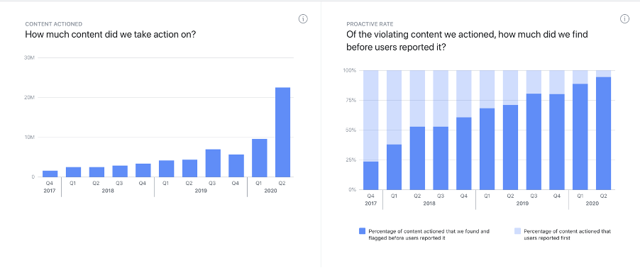
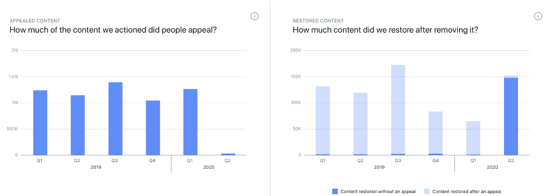

Digital infrastructure
Platforms as key component of the digital public sphere
A social media platform constitutes an online digital space, which enables and facilitates communication and interaction among a multiplicity of persons and/or entities by providing the necessary technical infrastructure and tools. Accordingly, platforms give rise to a community of users who use this infrastructure to engage in public discourse by means of posting and sharing diverse types of content, thereby facilitating civic participation in addressing issues of public concern. Political discussion and news media consumption, two substantial components of the social media experience, are particularly integral to civic participation. Social media platforms’ openness to the public, high number of users, and influence on contemporary social, political, and cultural discourse make it possible to describe them as a key component of the digital public sphere. Despite their importance for public discourse, platforms are owned and administered by private companies who exercise substantial discretion in determining the terms and conditions that govern user activity and behaviour on the platform. As platforms’ user bases grow (to over 2.7 billion users in the case of Facebook, so do concerns over the influence of private decision-making on shaping public discourse. Thus, governments that support deliberative discussion, self-determination, and inclusive civic participation in the digital public sphere have a duty to facilitate and foster healthy and robust public discourse by ensuring greater fairness and transparency in platform governance.
Content moderation and freedom of expression
Implications for the protection of freedom of expression in the digital public sphere
Content moderation in particular has considerable potential to shape and influence the nature and scope of the discourse taking place over a platform. Content moderation, as it concerns us here, is the process by which platforms shape community participation, prevent abuse, and ensure compliance with terms of service and community standards that they define. Platform owners and/or administrators are able to engage in content moderation by means of exercising their rights of ownership of the platform infrastructure and authority over its use. It is the implementation of those terms, standards, and guidelines that are the single means by which rules are experienced by ordinary users.
Content moderation can come in many forms. On Facebook, a post can be reported by another user for violation of specific rules, an automated algorithm can spot potentially illegal content before it is shared, or in extreme cases, a user can be banned completely, making the platform virtually inaccessible to that user. Notwithstanding the variety of forms, content moderation has one clear impact: a private entity makes a decision concerning an individual’s ability to access and to participate in the public discourse taking place over the platform and interacting with a community of users.
Content moderation therefore has significant implications for the protection of freedom of expression in the digital public sphere. While pursuing a legitimate objective of preventing abuse by taking down illicit or harmful content and ensuring compliance with the platforms’ terms of service and community standards, inaccuracies and inefficiencies in the design and implementation of the content moderation system can negatively impact freedom of expression inter alia in the following ways:
- Wrongful removal/flagging of legitimate content that impedes free-speech.
- Wrongful banning of users/disabling of accounts that prevents individuals from accessing and participating in the public discourse taking place on the platform.
What is even more troubling is that in certain instances, content that is not deemed illicit or harmful under prevailing law can be removed and user accounts disabled on grounds of non-compliance with the platform’s terms of service or community standards.
As exemplified below, the recent trend towards the deployment of algorithmic content moderation (ACM) systems exacerbates the negative impact of content moderation on freedom of expression.
The proliferation of algorithmic content moderation systems
Implications for the protection of freedom of expression in the digital public sphere
Causes
Many online networks have turned to computational solutions that help manage content contributed by users. These systems use algorithms for the classification of content to support platform moderation. The algorithms may classify content as illegal or potentially harmful, or they may be used for the identification of specified content, e.g. copyright-protected material. The classification of content can then be used for automated deletion or blocking, or as a support tool for human moderators (i.e. pre-moderation) who make the final decision regarding the illegality or harmfulness of the content.
The automated classification of content is a huge challenge. Even the recognition of predefined material (e.g. online music) is a complex task due to the large amounts of data, the necessary availability of large databases, issues of interoperability, and the requirement to deal with modified content, e.g. truncated or noisy files. The classification of illegal online content or of potentially harmful content also poses considerable technical challenges as it targets a more semantic level of the content, i.e. its meaning. These systems use different algorithms, including so-called artificially intelligent techniques. They range from rather simple schemes that focus on the identification of key words to more elaborate systems that use deep learning methods to identify postings with potentially illegal content based on large sets of examples previously classified by human experts. Despite efforts to make these systems more perceptive of nuance, most of them remain context-blind and therefore produce highly inaccurate results.
The current state-of-the-technology is far from the capabilities and recognition rate of humans in many domains. Existing methods can only achieve partial recognition. This is unsurprising given that the inter-expert agreement rate for classifying online content varies significantly. Most algorithmic methods only work on single contributions, such as a single post, and cannot properly deal with the overall context of postings, such as a chat history, its news context, timely aspects or cultural connotations. Typically, classification algorithms therefore can only deliver a rough classification quality with relatively large numbers of false positives and false negatives.
The increased use of automated content moderation can be attributed to several causes. This includes the surge in the volume of content that is posted and shared over online platforms due to increasing numbers of users and user activity, and as we have noted, the increasing availability of new artificial intelligence technology that is perceived to be more speedy, efficient, and cost-effective than human moderators.
However, the surge in the use of ACM can also be, in part, attributed to more stringent regulatory frameworks that impose greater pressure on platforms to monitor and filter content. Traditionally, platforms were either shielded from liability for third-party content (e.g. Section 230 of the US Communication Decency Act) or held liable in accordance with a ‘negligence-based’ approach, whereby liability was imputed only where they failed to take down illegal or harmful content once they were made aware of its existence on the platform (e.g. Arts. 14 & 15 of the EU e-Commerce Directive and Art. 1195 of the Chinese Civil Code).
Nevertheless, at present, there is a global shift towards increasing the degree of liability imposed on platforms for hosting illegal/harmful content as a means of compelling platforms to take a more proactive role in combating the surge of illegal content online. This shift can be described as being aimed towards coercing or co-opting platform owners into regulating content shared on their platforms by third parties on behalf of the state. At the extreme end of the spectrum of this shift are laws that impose strict liability regimes. For instance, under Article 17 of the EU C-DSM Directive, online content-sharing service providers are held directly liable for copyright-infringing content posted on their platforms by third parties. A strict liability regime is also envisioned in the Proposed Regulation on Terrorist Content. The need to avoid the risk of incurring liability can serve as a strong incentive for platforms to deploy ACM systems in order to ensure proactive detection and removal of illegal/harmful content.
The deployment of ACM is also induced due to the lack of the ‘Good Samaritan’ protection. For example, under Section 230 of the US Communications Decency Act, platforms cannot be held liable for content which they take down voluntarily provided they do so in good faith. Importantly, platforms are equally protected against liability for illegal content which they had undertaken to tackle, but failed to detect or remove. However, the ‘Good Samaritan’ protection is absent in the legislative framework of other jurisdictions, including the EU and China. Voluntary moderation efforts can be regarded as an indication that platforms do not store content in a mere passive and automatic manner and lead to the waiver of the liability exemption. As the cost of a single mistake can be too high, platforms implement ACM systems, which are believed to surpass relevant human capabilities. For example, the Good Samaritan gap between China and the US triggered America’s National Security review of TikTok – see TikTok case study below.
TikTok
TikTok/Douyin per se is a split product. Since 2019, ByteDance has been separating TikTok International from Douyin (TikTok’s Chinese version), but US TikTok has still been at the core of the debate on trans-border data flow and ACM in the “Splinternet”. At the beginning, when ByteDance was a start-up in China, Douyin was successful in shaping its business model with its core advantaged algorithms, and this model originated from that of ByteDance’s Toutiao, a news app, which controls algorithmic news feed based on user behavior as training data to algorithms.
TikTok/Douyin was originally algorithmically moderating creative contents to personalize the recommendations on a large scale. The data were thus the fuel to train algorithms. Subsequently, the Good Samaritan gap between China and the US triggered America’s review of TikTok. One reason may be that in the beginning of the entry to the US market, the Good Samaritan gap was constituted between TikTok’s and Douyin’s ACM systems and the latter was shaped by the more stringent ACM built upon Chinese legislative packages relatively lacking in the articles encouraging voluntary moderation efforts.
In response to the doubts and questions, since 2019, TikTok has been building an internal "Jurisdictional Wall" to separate data, codes, and algorithms between jurisdictions. While strengthening data protection, TikTok’s data separation/localization policy constitutes a self-governance model on ACM – limiting overseas access to the domestic training data for moderating algorithms. And TikTok’s ACM reform has also released its transparency reports and induced the Transparency & Accountability Center (TAC), TikTok Content Advisory Council, and the “Zhong Tai”. Due to the global pandemic, the details of the TAC were less revealed, but the members in the Content Advisory Council have represented the diversity and inclusiveness of different stakeholders in the US.
Platforms are also incentivised to increase the efficiency of their content-filtering activities through the imposition of monetary penalties. For instance, the German NetzDG Law foresees significant fines of up to 50 million euros. In a similar vein, Article 68 of the Chinese Cybersecurity Law envisages economic fines, suspension of business, and monetary penalties for persons in charge. The introduction of such stringent regimes induce platforms to resort to ACM as a more effective means of compliance.
In addition to more stringent policies, the increased use of ACM can also be attributed to other factors. Apart from a general rise in user-generated online content, one of the many effects of the global COVID-19 pandemic was the inability of employees to work from their office. For large platforms, such as Facebook or YouTube, that perform ex post content moderation in-house, this meant that tasks that would normally be done by human moderators were performed by automated algorithms in the interim. These unusual circumstances provide a unique view into the effects of increased ACM. Despite advancements in the capacity and sophistication of ACM technology, our research leads us to conclude that increased use of ACM without substantial human oversight results in higher levels of wrongful removal and disabling of legitimate content – see YouTube case study below.
Youtube
YouTube, the largest video hosting platform on the internet, has been the target of recent criticism by governments and users concerning their use of algorithms. Politicians have accused YouTube of political bias, algorithmic reinforcement of extremist views by recommendation systems, and the circulation of misinformation, while content creators, some of whom rely on revenue from videos as a main source of income, have strongly censured the platform for their lack of accountability on decisions of removal. The majority of these decisions are made by automated algorithms and in the wake of the pandemic and the absence of human moderators, YouTube relied more heavily on these algorithms.
Through numbers made available in YouTube’s transparency reports and conversation with policy representatives, we were able to investigate the effects of increased ACM more closely. As we see in the table below, over 11 million videos were removed in quarter 2 of 2020, almost double the number removed in the first quarter. From the drastic increase in removals and the disproportionate increase in reinstatements, we inferred that the algorithms are simply not able to perform as well as human moderators. This hypothesis was confirmed by a YouTube representative. Despite advances in the technological capability of automated algorithms, we conclude that more automated moderation without a human in the loop is not the solution.
| Removal, appeals, and reinstatement per quarter | Total number of videos removed | Appeals share | Reinstatement share |
|---|---|---|---|
| Q4 2019 | 5887021 | 1,81% | 19,6% |
| Q1 2020 | 6111008 | 2,72% | 24,7% |
| Q2 2020 | 11401696 | 2,85% | 49,4% |
Effects
The increased reliance on ACM has created a wellspring of effects for the social media ecosystem. The core challenge of creating an ACM system is to strike an appropriate balance between protecting users against exposure to objectionable (i.e. illegal or harmful) content and ensuring that users’ freedom of expression is adequately safeguarded. An insufficiently effective system might allow an unacceptable level of objectionable content to remain on the platform, potentially exposing users to considerable harm, offence, or risks to safety. On the flipside, however, an overzealous ACM system may unfairly remove legitimate content, creating a chilling effect with respect to what is seen as acceptable. Here we examine the latter concern and identify three primary limitations of algorithmic moderation technology that negatively impact on safeguarding users’ freedom of expression.
First, ACM systems are context-blind. While capable of detecting certain words and expressions, they interpret them as mere strings of data rather than components of human lexicon. For example, an ACM tool targeting obscenity online cannot ascertain whether an individual used strong vocabulary to incite hatred or to raise an essential matter of public interest. The ignorance of nuance can threaten forms of online expression that contribute to important public debates.
Second, ACM is significantly language-dependent. Most systems powered by natural language processing are only trained to process texts in English and a few other frequently used languages. This makes their accuracy rate much lower than when they are deployed for analysing texts written in more uncommon languages. Furthermore, most platforms are unable to review automatically flagged materials written in less common languages as they lack moderators fluent in them. As a result, the roll-out of ACM can impair the freedom of expression of certain language speakers, especially those belonging to linguistic minorities for which only relatively small training-datasets are available.
Third, ACM is incapable of processing certain types of files. Most ACM tools are only able to process conventional types of files, such as text images and videos. However, they are still incapable of ensuring adequate analysis of other viral types of content, including memes and GIFs. Due to the low accuracy of ACM, such materials may either remain undetected or be subject to over-removal. The limited capabilities of ACM tools can therefore give rise to an asymmetry among various forms of online expression.
Closing the information gap
Advocating for a informed, inclusive debate among all stakeholders
People can reasonably disagree about how to balance freedom of speech with other interests and how these different priorities should be weighed. All can agree, however, that this is not a decision for platforms to take by themselves. What is needed instead is informed, inclusive debate among all stakeholders, backed up by responsive policymaking, to ensure that all perspectives are heard.
Platforms have begun to take such steps, at least internally. Facebook has a large public policy team which engages with experts and other key stakeholders around the world in order to develop its community standards and assess how well they work in practice. It also analyses user appeals to get a sense of the types of content, which users are most likely to believe should remain on the platform. It has also established an independent Oversight Board which will adjudicate on individual cases in order to develop principles that can, in turn, be used to reshape its community standards, and even hear appeals from users of other platforms.
Such steps are welcome, but they remain in large part a closed loop, with little ability for ordinary users to engage in the process. And although Facebook has for several years been releasing high-level data about its moderation of various kinds of content in the form of Transparency Reports – see Facebook case study below – this information lacks sufficient granularity for outside researchers to understand how and why content moderation decisions are made. On the individual level, the amount of information provided to users to enable them to understand why a particular piece of content has been removed varies considerably among different platforms (see table below).
| User gets notified about content removal decisions? | Appeal mechanism visible? | Appeal mechanism visible? | Appeal mechanism visible? | |
|---|---|---|---|---|
| Yes | On site | Yes | Yes | |
| Sometimes, but not enforced | Case by case with moderator | Yes | Yes | |
| TikTok | Yes, notification in the application | Integrated in the application | No | No |
| YouTube | Yes | In YouTube Studio | Yes | Yes |
| Der Standard | Indirectly using a counter | Yes, email address that needs to be found on the website | No report, but some figures published | No |
Content moderation on Facebook: what do we know?
Calls for Facebook to standardise and improve its content moderation have naturally been accompanied by demands to know whether and to what extent Facebook is actually doing so. Facebook’s community standards transparency reports, which provide data stretching as far back as late 2017, provide basic information about the scope and type of violating content that it "actioned" – i.e., removed – from its main platform as well as from its popular subsidiary Instagram. More specifically, the data provided is as follows:
Prevalence – showing in absolute terms the volume of problematic content in a variety of categories; however, full longitudinal data is only available for the "Adult Nudity and Sexual Activity" and “Violent and Graphic Content” categories. For other categories, Facebook claims that either the volume of violating content seen by users is either too small to create a robust sample, or simply that data cannot be estimated because “our prevalence measurement is slowly expanding to cover more languages and regions”. In still other cases, the data is reported for a single quarter, e.g. “we estimate that fake accounts represented approximately 5% of our worldwide monthly active users (MAU) on Facebook during Q2 2020.”
Content actioned – showing the volume of content what was "actioned" i.e. removed by Facebook, for each quarter.
Proactive rate – showing the percentage of content that was found and flagged by Facebook before being reported by users for each quarter. In almost all cases this "finding and flagging" is done automatically using rules-based and/or AI detection systems.
Appealed content – showing in absolute terms how much content that was removed was then appealed by users, for each quarter.
Restored content – showing in absolute terms how much content was restored, either without an appeal (i.e. following internal review) or after a successful appeal.
Below are graphs showing the content actioned, proactive rate, appealed content, and restored content for hate speech, an especially challenging category of content with respect to enforcement and the balancing of users’ rights and expectations. Unfortunately, the data provided in the transparency reports is not offered in an open or machine-readable format, so the graphs below are merely screenshots from the Transparency Report.


There are undoubtedly several things we can learn from the data that Facebook releases publicly. Basic longitudinal data highlights several trends with respect to the overall prevalence of content (at least for some categories) and to the responses Facebook takes. The data allows us to at least informedly speculate about what underlies these trends, such as the impact of the COVID-19 pandemic and the rise of automated flagging technology. Yet there are several questions that an interested user would be unable to answer without the points of contact that the authors were able to draw upon. First, there is a lot of missing data, particularly with respect to prevalence, with only two of the ten content categories offering full longitudinal data. Second, the format that the data is presented in prevents more granular analysis without laborious manual recreation of the data in a manipulable format. Third and most importantly, the reports say little about how and why decisions get made in the way that they do. As a recent piece by the EFF argues, "true transparency must provide context", and there is little context in the transparency reports regarding the basis on which individual decisions are made. Nor is information available about the process of content moderation itself, the use of automated technology, besides that which can be inferred from the above (let alone how such technology works), or the background and location of content moderators. Recent changes made to Facebook’s Community Standards can be found on its website, but again, how and why these changes were made is not made clear – and nor is the relationship between the development and iteration of standards and how they are enforced apparent.
Finally, the impact of the COVID-19 pandemic appears to have been stark. Facebook effectively suspended its appeals process as mass lockdowns went into effect given the limited resource available, explaining the drastic drop in appeals, though it appears to have restored much more content outside of the appeal process, which more than makes up for the previous quarter’s total. Of course, it is impossible to assess the accuracy of the decision to restore content in this way.
This information gap – between what platforms know and what individual users, regulators, and other stakeholders and interested parties, such as scientific researchers, know – urgently needs to be closed. Only when all stakeholders have access to sufficient data can informed and inclusive debate take place about how content moderation systems ought to work and the capacity of ACM systems’ fitness for safeguarding freedom of expression be assessed.
Der Standard
ACM is not limited to large online platforms. The Austrian newspaper Der Standard (paid circulation app. 56000, online visitors app. 35 million p.m.) runs a moderated online forum. Registered users comment on news articles and the moderators aim at an engaged and constructive discourse. They use two algorithmic support tools: the pre-moderation classification system Foromat trained to classify user comments in several categories, including hate speech, discrimination etc. The second system, the de-escalation bot, aims to identify postings that have a positive influence on the discussion.
The AI approach for classification in seven categories was developed and published by the Austrian Research Institute of Artificial Intelligence.
Der Standard uses algorithms mostly to deal with the large number of online content while maintaining quality of discourse. For the most part, the systems help human moderators to decide on posts that should not be published or not highlighted. However, the system is also capable of automatically removing content, e.g. duplicated entries. Format has been in use for more than 15 years.
Typically, moderators will check the posts with the help of the algorithms before they go online. In case of deletion, users can check a counter that informs them about removed content. However, user posts can also be deleted without being inappropriate, e.g. when they replied to an unsuited post and the counter cannot currently distinguish such cases.
Users can appeal the removal of their post by sending an email to a somewhat hidden address. The cases are then reviewed and the users receive a feedback email or their post is reinstated right away. Der Standard does not yet publish regular reports about deletions, complaints, or reinstantiations. During the COVID-19 crisis, it became impossible for the moderators to deal with appeals due to the increasing number of posts while staff was on short labour.
Closing the accountability gap
Advocating for effective and transparent complaints and redress mechanisms
In addition to the information gap we have also identified an accountability gap that arises from the absence of effective and transparent complaints and redress mechanisms which enable users to challenge wrongful removal of legitimate content and disabling access.
Not all legislative instruments targeted at regulating platforms explicitly require platforms to establish effective complaints and redress mechanisms. On the other hand, those that do impose such an obligation do not incorporate adequate measures to ensure the effectiveness of the complaints and redress mechanism. Furthermore, the legal enforceability of these obligations are unclear.
The EU C-DSM requires online content-sharing service providers to put in place "an effective and expeditious complaint and redress mechanism". However, the enforceability of this obligation is uncertain, as no liability is apportioned for non-compliance. In the US, s. 512 (g) of the Digital Millennium Copyright Act (DMCA) provides for a system of “counter-notice” by means of which a user is able to challenge the removal or disabling of content. However, the burden of establishing the lawfulness of the content is left squarely on the shoulders of the user, something that all users may not have the resources or expertise to perform. On the other hand, submitting a counter-notice can itself expose the user to an infringement law-suit; a risk many users will be unwilling to take.
An effective complaints and redress mechanism would constitute a powerful tool for safeguarding freedom of expression on online platforms, as it would afford users a means by which to challenge wrongful censorship of free-speech without incurring the costs and risks associated with court procedures. Thus, closing the "accountability gap" requires the introduction of positive and enforceable obligations on platforms to provide such mechanisms and adequate regulatory supervision to ensure their efficacy. To take China’s online content moderation as an example, some ministry-level regulatory documents that are legally binding require platforms to “practice social responsibility and industrial self-discipline”, as well as “improving the mechanisms for screening malicious reports and dealing with complaints in a timely and fair manner”, but it is unclear whether the obligation should be applicable to ACM systems. China also called for the “net norms” as the self-governance instruments of platforms in the main ministry-level internet-regulating documents, which encouraged most platforms to adopt complaints and redress mechanisms.
Policy recommendation
Proposal for bridging the information and accountability gaps
We propose the following measures with the objectives of bridging the information and accountability gaps exemplified above and of safeguarding freedom of expression on online platforms that are open to public participation and interaction.
The goal of these proposals is to strengthen the character of publicly accessible online platforms as digital spaces for robust and healthy public discourse by:
- Urging regulators to take a more proactive role in supervising and regulating content moderation by privately owned platforms, especially in relation to the protection of freedom of expression (this is contrasted with the existing approach, whereby states favour self-regulation by platforms with minimal public supervision).
- Requiring greater openness and transparency from platforms with regard to their content moderation processes, particularly where ACM systems are deployed.
- Enhancing the accountability of the content moderation process by empowering users to challenge wrongful take-down of content which may violate users’ freedom of expression.
Our proposals consist of two principal layers:
- Introduction of enforceable statutory obligations requiring platforms to establish effective complaints and redress mechanisms (accountability gap), periodic reporting requirements, and fundamental rights impact assessments (FRIAs) (information gap).
- Establishment of an Ombudsperson, a public authority vested with powers to supervise and assess the safeguarding of freedom of expression by platforms and to review decisions delivered by the platform pursuant to the complaints and redress process, for violations of freedom of expression.
Proposals for closing the accountability gap
Enforceable statutory obligations
We propose the introduction of a statutory obligation to establish and maintain effective complaints & redress mechanisms. This obligation would apply to all online platforms that host content provided by members of the public. Failure to comply with the obligation would expose the platform to state-imposed sanctions and/or administrative penalties imposed by the Ombudsperson.
The statutory obligation would require the platform to ensure that their appeals and redress mechanism incorporates inter alia the following features:
- Duty to notify users of removal/disablement of content posted by them (including shadow banning).
- Consideration and determination of complaints to be carried out by human reviewers.
- Reviewers to be provided with adequate training and resources to consider and determine complaints.
- Right of users and other interested parties to be heard in determining the complaint.
- Complaints to be scrutinized and decision delivered and (if applicable) redress provided within a defined time-frame that is determined in a manner that balances the interests of platform owners and users.
- Duty to give reasons for decision.
While acknowledging that compliance with this obligation would impose additional financial and administrative burdens that could be onerous for small and medium-sized platforms, we believe that they are necessary and proportionate for ensuring the protection of freedom of expression. Given the character of these platforms as digital public infrastructures, it is reasonable to require them to put in place minimal safeguards to ensure that content moderation is carried out in a manner that safeguards due process and user rights and interests.
Ombudsperson
The Ombudsperson will be authorised to review decisions delivered by platforms pursuant to the complaints mechanism, where the aggrieved party is of the view that the decision violates their freedom of expression. In such a case, the Ombudsperson will review the decision for possible violations of freedom of expression and will deliver a ruling that is final and binding on all parties. The Ombudsperson will be authorised to order restitution (e.g. content to be restored, account to be unblocked) and, where necessary, the payment of damages/compensation to the aggrieved party.
Furthermore, where the human reviewers dealing with complaints are uncertain about determining the freedom of expression issues that arise through a complaint, they will be able to consult with the Ombudsperson who will provide advice and guidance on determining those issues.
A platform’s failure to comply with a ruling delivered by the Ombudsperson will expose it to administrative penalties and/or legal sanctions. Any party who is dissatisfied with a ruling issued by the Ombudsperson will have the possibility of appealing the ruling to an appropriate national or regional court.
It is anticipated that this measure would ensure that determinations on potential violations of freedom of expression are not exclusively left to private entities, but are subject to oversight by a public authority who will be qualified to engage in a comprehensive analysis of the legal issues involved. Moreover, it would resolve the information asymmetry problem which refers to the absence of adequate knowledge and skills on the part of human reviewers employed by platforms to correctly assess the legal issues relating to the violation of freedom of expression.
Proposals for closing the information gap
In addition to the general obligation proposed above we propose the introduction of two additional enforceable statutory obligations that would apply to platforms that are considered to have a particularly significant impact on public discourse, e.g. by means of catering to a large community of users, attracting a large public audience, or hosting a large volume of content.
The determination of the exact criteria based on which these obligations will become applicable should be left to policy-makers and regulators. However, existing legal provisions differentiate levels of liability based on factors, such as number of monthly unique visitors, annual turnover of the platform, and so on. It is also possible that not-for-profit educational and scientific platforms and open-source software developing platforms will be exempted from these specific obligations taking into account the financial and administrative burdens that they entail. The objective of this limitation is to exempt smaller and less-financially profitable platforms from the financial and administrative commitment involved in complying with the statutory obligations proposed below. On the other hand, it is reasonable to require large platforms that profit from the public interaction and discourse taking place on the online infrastructure provided by them to take reasonable and proportionate measures to ensure that the content moderation systems deployed by them safeguard user interests and freedom of expression to an adequate extent.
Enforceable statutory obligations
First, we propose an enforceable statutory obligation to provide periodic (annual/biannual) reports to the Ombudsperson on the number of complaints received by platform and number of reinstatements carried out. This proposal is inspired by Section 2 of the NetzDG Law which introduces a similar half-yearly reporting obligation. It is envisioned that this reporting obligation would provide greater transparency to the complaints and redress process and enable regulators and members of the public to monitor and evaluate the accuracy of the content moderation systems and the efficacy of the complaints and redress mechanism.
The report should inter alia:
- Categorise complaints according to the type of action that was challenged (e.g. removal, disablement of access), reason for action-taken (e.g. hate-speech, copyright infringement) and whether complaint was made by an individual user or an organization.
- Categorise reasons for reinstatement (e.g. human error, error on the part of the AI system, decision overturned by Ombudsperson on appeal).
- Indicate the time-span within which removal/disablement of content was made, complaint was received, decision provided, and reinstatement carried out.
- Indicate the number of decisions that were appealed to the Ombudsperson.
Second, we propose an enforceable statutory obligation to provide an annual FRIA to assess the impact of the deployment of ACM on freedom of expression. The aim of the FRIA is to enable regulators and members of the public to evaluate and supervise the measures taken by a platform for safeguarding freedom of expression. It is inspired by the Data Protection Impact Assessment that was introduced under Article 35 of the EU GDPR. Such an impact assessment would be especially relevant for assessing the impact of new technologies, such as automated processing systems, to fundamental rights and freedoms.
The FRIA should inter alia incorporate information on the following aspects:
- How do the community standards/ terms and conditions of the platform safeguard freedom of expression?
- Description of ACM systems used, the purpose of the use, and the mode of implementation.
- Assessment of the necessity and proportionality of employing ACM systems in relation to the stated purpose.
- Identification of the risks of AMC systems to freedom of expression of users and measures employed to mitigate risks.
- Description of the appeals procedure and remedial measures provided to users.
- Description of training and resources provided to human reviewers (dealing with complaints) to carry out a comprehensive legal analysis of the freedom of expression issues involved.
Ombudsperson
Regarding the second layer of our proposals on closing the information gap, the Ombudsperson will be authorized to:
- Receive and assess the periodic reports and FRIAs submitted by platforms and issue recommendations for improving content moderation systems and complaints and redress procedures with the objective of better protecting freedom of expression.
- Impose administrative penalties for failure to comply with statutory obligations or to implement recommendations.
- Maintain a website that is available to the public where summaries of periodic reports and FRIAs provided by platforms are published as well as rulings or summaries of rulings delivered by the Ombudsperson in the exercise of his powers of review, which are redacted as required by law (e.g. to protect personal information or commercially-sensitive information).
- Provide guidance and advice to platforms on their statutory duties and in ensuring that their content moderation systems comply with statutory requirements.
A platform’s failure to comply with statutory obligations or to implement a recommendation delivered by the Ombudsperson will expose it to legal sanctions and/or administrative penalties imposed by the Ombudsperson. Any party who is dissatisfied with a ruling issued by the Ombudsperson will have the possibility of appealing the ruling to an appropriate national or regional court.
It is anticipated that close supervision of the fitness of the content moderation systems (particularly ACM systems) by the Ombudsperson and periodic evaluation thereof will incentivize and compel platforms to ensure that those systems are designed and calibrated to avoid violations to freedom of expression through the removal or disabling of legitimate content.
The publication of summaries of the periodic reports and FRIAs as well as rulings (or summaries thereof) on a publicly available website by the Ombudsperson is expected to ensure the availability of information on the efficacy and accuracy of content moderation to stakeholders, interested parties (e.g. scientific researchers), and the wider public. It is hoped that this would contribute towards facilitating informed, society-wide debate on user freedoms and the calibration of content moderation systems to safeguard and foster freedom of expression in the digital public sphere.

{kind=link}
{kind=link}